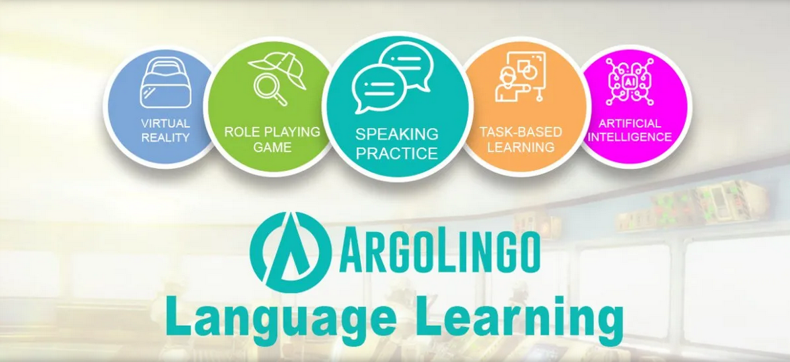
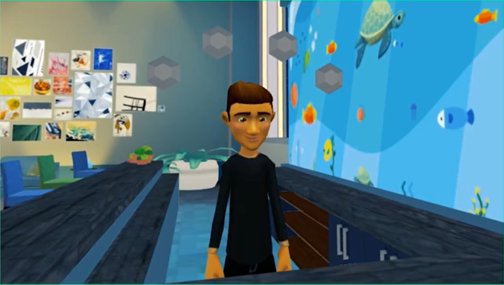
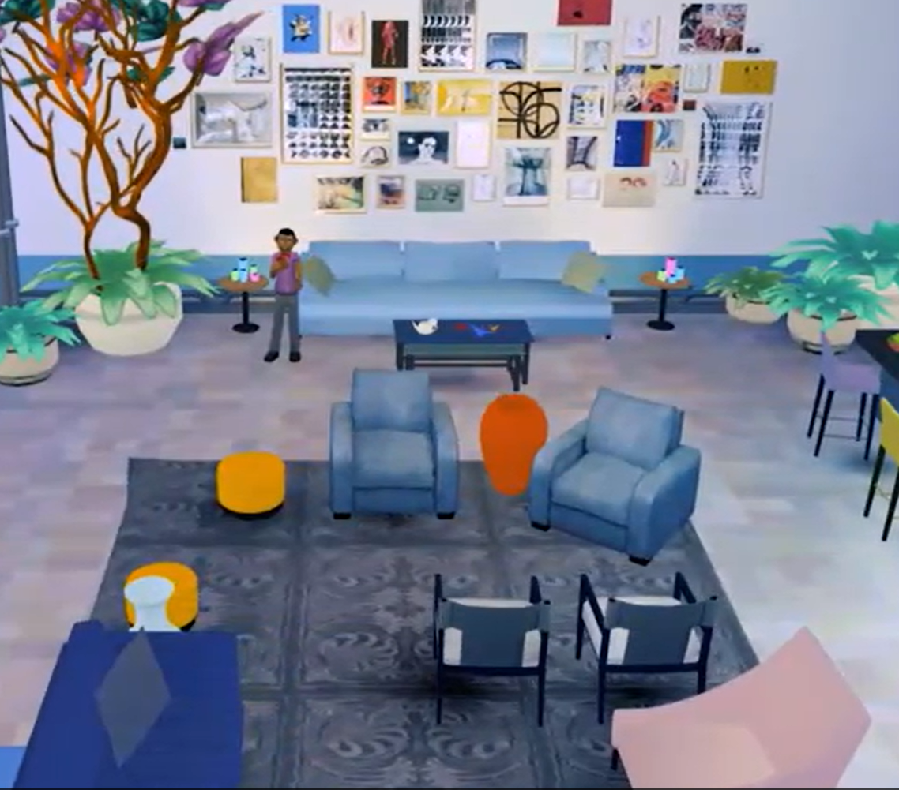
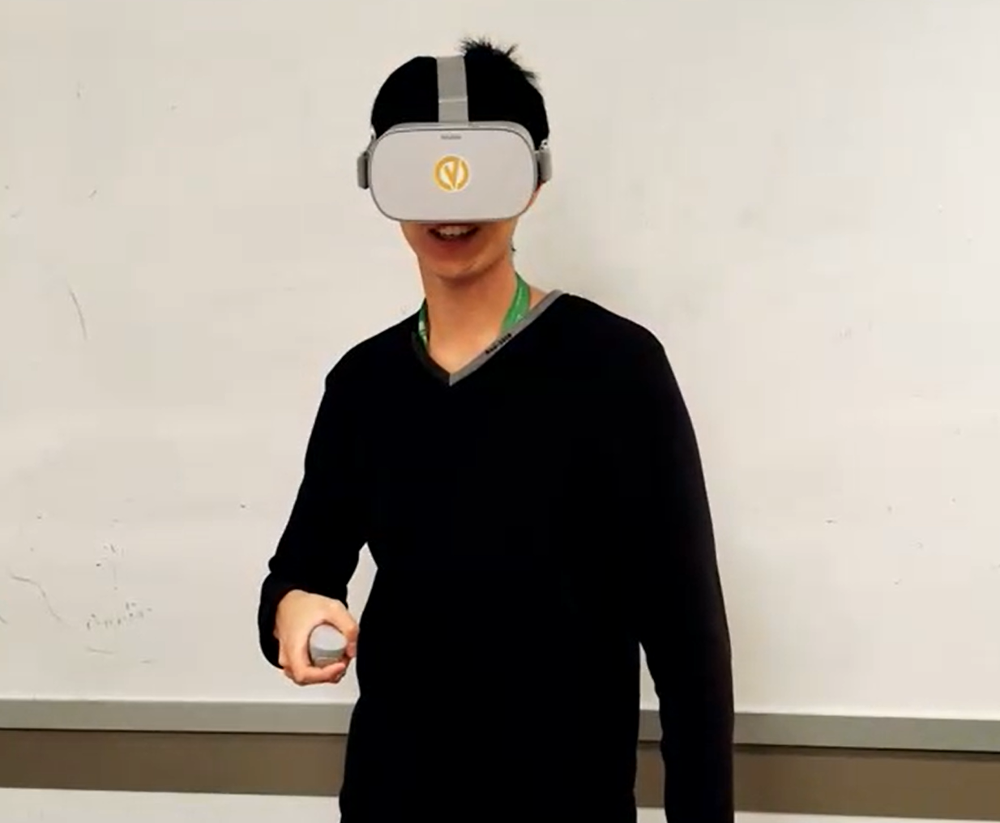

ArgoLingo

Allows Language Learners a safe space to have conversations with Virtual Humans AI characters. By being a detective, learners solves quests in episodic series so they can be engaged in this game based learning experienceOculus GOC#UnityJuly 2019 - July 2020This app had a predecessor called Argotian. I had to improve this application that allows user to move around the space station and spawn AICsMy tasks included: locomotion improvement, implement spawning of AICs in the bar area and QA the appThe locomotion in the predecessor was teleportation. What it didn't have is having the user teleport into the AIC area and talk to them. My job was to make sure the user can see a teleportation circle so the user knows where they teleport to. I did this by making sure the teleportation circle is always above the floor. Since the floor has a navmesh, I can detect where the floor is and make sure the teleportation circle is always on top of the floor (y axis). In addition, the AIC area where the user can interact with the AIC should be in front of the AIC.

I implemented random spawning in the hang out area where all the sofas and chairs are as displayed in the image below. I would have empty gameobjects on all the seats. Each time the user enters the room, I would randomize where characters would spawn to

At the time we did not have a QA, so I was helping QA the app. I would start from the beginning, talk to all the AICs and make sure locomotion was correct. The hardest part to test was talking to AICs, because the AICs will give you hints or answers based on your clb level. I had to make sure all possible answers could be detected based on what I said. The things I said were based on microsoft LUIS - an intent engine that we use

We brought our app to a school and let the students try it out. It felt great seeing our product getting tested by learners such as the students. This event caught the attention of City News